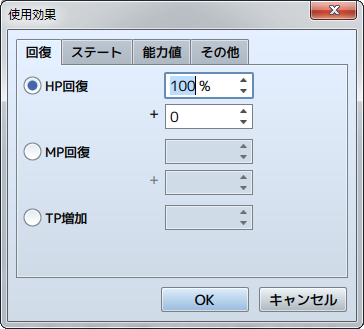

使用効果の設定方法
設定の概要
スキルとアイテムのデータにある［使用効果］の設定は、アクター／敵キャラが使ったとき、対象のキャラクターに与える効果を定義するものです。
付与できる効果には下記の13種類があります。複数の効果を設定すれば、複合的な効果を持つスキル／アイテムを表現できます。
設定方法

効果を設定するには欄内の空行をダブルクリックします。表示されたウィンドウで効果の種別を選択し、効果を及ぼす対象や効き目の大きさなどを指定します。
設定した効果の内容は［使用効果］のリストに表示されます。この項目をダブルクリックすると、指定した内容を再編集できます。また項目を右クリックすると表示されるコンテキストメニューで、設定のコピーや削除などの操作が行なえます。
使用効果の項目の内容
［回復］タブ
- HP回復
- HPを回復（現在値に加算）します。回復値を、対象キャラクターの最大HPに対する比率（-100～100％）と一定値（-999999～999999）の和で指定します。どちらか一方の基準で指定したい場合、もう一方の値を0にします。アイテムにこの効果を設定する場合、使用者の［薬の知識］の特殊能力値に応じて回復値が増減します。
- MP回復
- MPを回復（現在値に加算）します。回復値を、対象キャラクターの最大MPに対する比率（-100～100％）と一定値（-9999～9999）の和で指定します。どちらか一方の基準で指定したい場合、もう一方の値を0にします。アイテムにこの効果を設定する場合、使用者の［薬の知識］の特殊能力値に応じて回復値が増減します。
- TP増加
- TPを指定した量だけ増やします。増加値を、一定値（0～100）で指定します。
［ステート］タブ
- ステート付加
- ステートを付加します。対象のステートと成功率（0～1000％）を指定します。100％より高くすると、本来の有効度よりも高い確率で付与に成功します。
- ステート解除
- ステートを解除します。対象のステートと成功率（0～100％）を指定します。
［能力値］タブ
- 強化
- 指定した能力値の変動レベルを1段階引き上げます。1段階につき元の値の25%変動します。一度に2段階以上上げたい場合は、この効果を複数付けることで実現できます。対象の能力値と効果が継続するターン数（1～1000）を指定します。
- 弱体
- 指定した能力値の変動レベルを1段階引き下げます。1段階につき元の値の25%変動します。一度に2段階以上下げたい場合は、この効果を複数付けることで実現できます。対象の能力値と効果が継続するターン数（1～1000）を指定します。
- 強化の解除
- 指定した能力値の変動レベルが強化のとき、それをリセットして本来の能力値に戻します。
- 弱体の解除
- 指定した能力値の変動レベルが弱体のとき、それをリセットして本来の能力値に戻します。
［その他］タブ
- 特殊効果
- ［逃げる］のみ設定可能です。対象のキャラクターを戦闘から離脱させます。アクターが効果を受けた場合、経験値などの付与の対象外になります。
- 成長
- 能力値を恒久的に引き上げます。対象の能力値と加算値（1～1000）を指定します。
- スキル習得
- アクターに指定のスキルを習得させます。敵キャラには、この効果は反映されません。
- コモンイベント
- 指定したコモンイベントを実行します。この効果は、ひとつのデータにひとつしか設定できません。